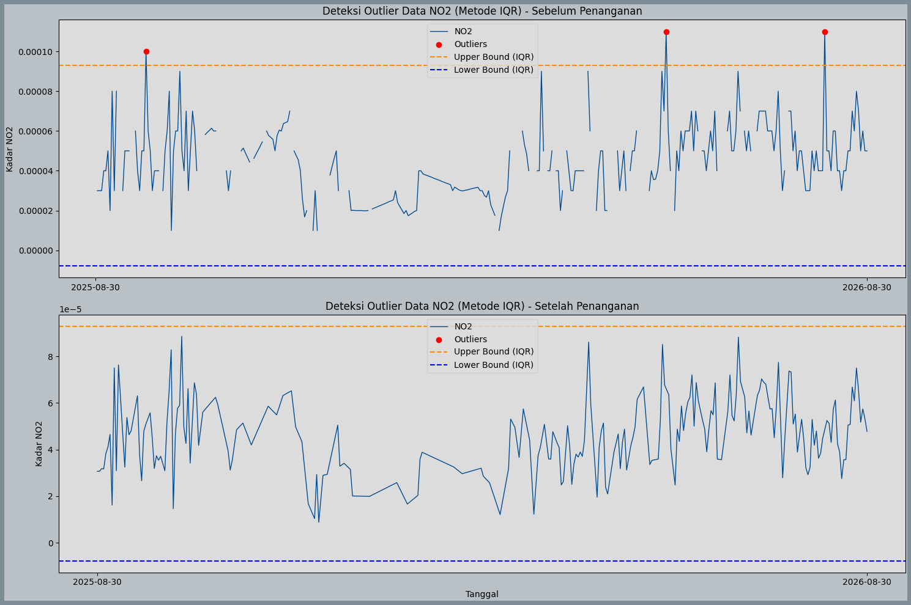
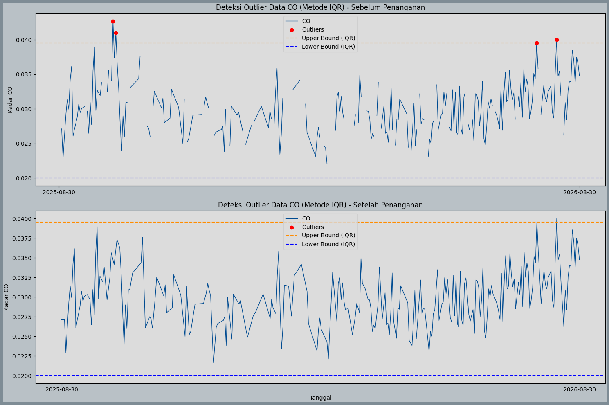
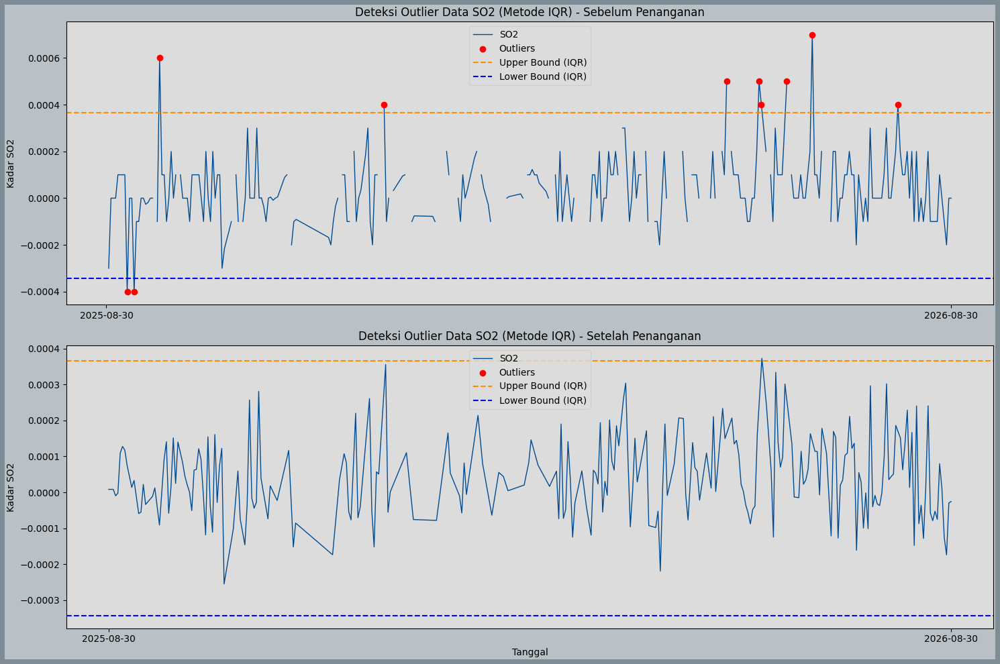
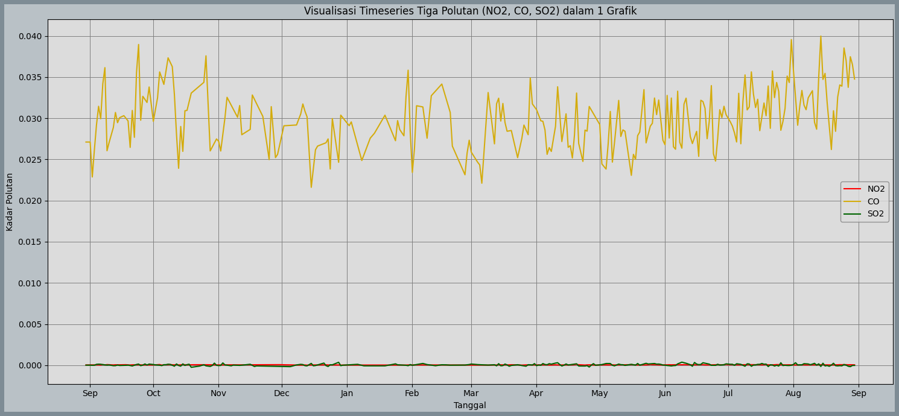

PreProcessing: Deteksi Outlier & Imputasi Missing Value serta Ekstraksi Fitur Pada NO2#
1. Deteksi Outliers pada Data Kualitas Udara di Kecamatan Kerek#
import pandas as pd
# Membaca data gabungan kualitas udara Tuban
df = pd.read_csv("KualitasUdaraKerek.csv")
# Daftar kolom fitur polutan yang akan dicek outlier-nya
# (Sesuaikan dengan nama kolom polutan yang ada di DataFrame Anda)
fitur_polutan = ['CO', 'NO2', 'SO2', 'O3']
for kolom in fitur_polutan:
if kolom in df.columns:
Q1 = df[kolom].quantile(0.25)
Q3 = df[kolom].quantile(0.75)
IQR = Q3 - Q1
lower_bound = Q1 - (1.5 * IQR)
upper_bound = Q3 + (1.5 * IQR)
outliers_iqr = df[
(df[kolom] < lower_bound) |
(df[kolom] > upper_bound)
]
print(f"=== Parameter: {kolom} ===")
print(f"Jumlah Outlier : {len(outliers_iqr)}")
if len(outliers_iqr) > 0:
print(outliers_iqr[['date', kolom]].head())
print("-" * 35 + "\n")
=== Parameter: CO ===
Jumlah Outlier : 4
date CO
38 2025-10-07T00:00:00.000Z 0.042697
40 2025-10-09T00:00:00.000Z 0.041038
335 2026-07-31T00:00:00.000Z 0.039562
349 2026-08-14T00:00:00.000Z 0.039993
-----------------------------------
=== Parameter: NO2 ===
Jumlah Outlier : 3
date NO2
24 2025-09-23T00:00:00.000Z 0.00010
270 2026-05-27T00:00:00.000Z 0.00011
345 2026-08-10T00:00:00.000Z 0.00011
-----------------------------------
=== Parameter: SO2 ===
Jumlah Outlier : 10
date SO2
9 2025-09-08T00:00:00.000Z -0.0004
12 2025-09-11T00:00:00.000Z -0.0004
23 2025-09-22T00:00:00.000Z 0.0006
120 2025-12-28T00:00:00.000Z 0.0004
268 2026-05-25T00:00:00.000Z 0.0005
-----------------------------------
=== Parameter: O3 ===
Jumlah Outlier : 5
date O3
1 2025-08-31T00:00:00.000Z 0.122804
56 2025-10-25T00:00:00.000Z 0.123395
57 2025-10-26T00:00:00.000Z 0.122382
58 2025-10-27T00:00:00.000Z 0.122729
62 2025-10-31T00:00:00.000Z 0.122300
-----------------------------------
2. Merubah Outliers Menjadi NaN serta Imputasi Missing Values dan Outliers (NaN)#
import pandas as pd
import numpy as np
# 1. Load data
df = pd.read_csv("NO2 Kerek.csv")
df['date'] = pd.to_datetime(df['date'])
df = df.sort_values('date').set_index('date')
cols = ['NO2']
# 2. Ubah outliers pada data asli menjadi NaN terlebih dahulu
for col in cols:
Q1 = df[col].quantile(0.25)
Q3 = df[col].quantile(0.75)
IQR = Q3 - Q1
lower_bound = Q1 - 1.5 * IQR
upper_bound = Q3 + 1.5 * IQR
# Ganti nilai di luar batas IQR menjadi NaN
df.loc[(df[col] < lower_bound) | (df[col] > upper_bound), col] = np.nan
# 3. Sekarang lakukan imputasi (missing value asli + outliers yang jadi NaN) sekaligus
df_clean = df.interpolate(method='time').ffill().bfill()
# 4. Cek hasil akhir
print("Sisa Missing Value:", df_clean.isnull().sum().sum())
df_clean.to_csv('NO2-Kerek-Clean.csv')
Sisa Missing Value: 0
#CO
import pandas as pd
import numpy as np
# 1. Load data
df = pd.read_csv("CO Kerek.csv")
df['date'] = pd.to_datetime(df['date'])
df = df.sort_values('date').set_index('date')
cols = ['CO']
# 2. Ubah outliers pada data asli menjadi NaN terlebih dahulu
for col in cols:
Q1 = df[col].quantile(0.25)
Q3 = df[col].quantile(0.75)
IQR = Q3 - Q1
lower_bound = Q1 - 1.5 * IQR
upper_bound = Q3 + 1.5 * IQR
# Ganti nilai di luar batas IQR menjadi NaN
df.loc[(df[col] < lower_bound) | (df[col] > upper_bound), col] = np.nan
# 3. Sekarang lakukan imputasi (missing value asli + outliers yang jadi NaN) sekaligus
df_clean = df.interpolate(method='time').ffill().bfill()
# 4. Cek hasil akhir
print("Sisa Missing Value:", df_clean.isnull().sum().sum())
df_clean.to_csv('CO-Kerek-Clean.csv')
Sisa Missing Value: 0
#SO2
import pandas as pd
import numpy as np
# 1. Load data
df = pd.read_csv("SO2 Kerek.csv")
df['date'] = pd.to_datetime(df['date'])
df = df.sort_values('date').set_index('date')
cols = ['SO2']
# 2. Ubah outliers pada data asli menjadi NaN terlebih dahulu
for col in cols:
Q1 = df[col].quantile(0.25)
Q3 = df[col].quantile(0.75)
IQR = Q3 - Q1
lower_bound = Q1 - 1.5 * IQR
upper_bound = Q3 + 1.5 * IQR
# Ganti nilai di luar batas IQR menjadi NaN
df.loc[(df[col] < lower_bound) | (df[col] > upper_bound), col] = np.nan
# 3. Sekarang lakukan imputasi (missing value asli + outliers yang jadi NaN) sekaligus
df_clean = df.interpolate(method='time').ffill().bfill()
# 4. Cek hasil akhir
print("Sisa Missing Value:", df_clean.isnull().sum().sum())
df_clean.to_csv('SO2-Kerek-Clean.csv')
Sisa Missing Value: 0
3 Visualisasi Data Sebelum dan Sesudah Imputasi#
Visualisasi membandingkan data yang masih memiliki outlier dengan data yang sudah di-interpolasi.
import pandas as pd
import matplotlib.pyplot as plt
import numpy as np
# Load original data with outliers
df_raw = pd.read_csv('KualitasUdaraKerek.csv')
df_raw['date'] = pd.to_datetime(df_raw['date'])
df_raw.set_index('date', inplace=True)
pollutants = ['NO2', 'CO', 'SO2']
for pol in pollutants:
try:
# Load cleaned data
df_clean = pd.read_csv(f'{pol}-Kerek-Clean.csv')
df_clean['date'] = pd.to_datetime(df_clean['date'])
df_clean.set_index('date', inplace=True)
# Hitung IQR untuk batas atas dan bawah
Q1 = df_raw[pol].quantile(0.25)
Q3 = df_raw[pol].quantile(0.75)
IQR = Q3 - Q1
lower_bound = Q1 - 1.5 * IQR
upper_bound = Q3 + 1.5 * IQR
# Cari titik outlier di data asli
outliers = df_raw[(df_raw[pol] < lower_bound) | (df_raw[pol] > upper_bound)]
# Styling
plt.rcParams['axes.facecolor'] = '#dcdcdc'
plt.rcParams['figure.facecolor'] = '#b9c1c6'
fig, (ax1, ax2) = plt.subplots(2, 1, figsize=(15, 10))
# --- Plot 1: Data Asli (Sebelum Penanganan) ---
ax1.plot(df_raw.index, df_raw[pol], color='#004b91', linewidth=1, label=pol)
ax1.scatter(outliers.index, outliers[pol], color='red', zorder=5, label='Outliers', marker='o')
ax1.axhline(y=upper_bound, color='darkorange', linestyle='--', label='Upper Bound (IQR)')
ax1.axhline(y=lower_bound, color='blue', linestyle='--', label='Lower Bound (IQR)')
ax1.set_title(f'Deteksi Outlier Data {pol} (Metode IQR) - Sebelum Penanganan')
ax1.set_ylabel(f'Kadar {pol}')
ax1.legend(loc='upper center', bbox_to_anchor=(0.5, 1.0), fancybox=True, facecolor='#dcdcdc')
# Set x-ticks hanya awal dan akhir tanggal
first_date = df_raw.index.min()
last_date = df_raw.index.max()
ax1.set_xticks([first_date, last_date])
ax1.set_xticklabels([first_date.strftime('%Y-%m-%d'), last_date.strftime('%Y-%m-%d')])
# --- Plot 2: Data Bersih (Setelah Penanganan) ---
ax2.plot(df_clean.index, df_clean[pol], color='#004b91', linewidth=1, label=pol)
# Biarkan legend ada meskipun tidak ada outlier lagi, sesuai gaya
ax2.scatter([], [], color='red', label='Outliers', marker='o')
ax2.axhline(y=upper_bound, color='darkorange', linestyle='--', label='Upper Bound (IQR)')
ax2.axhline(y=lower_bound, color='blue', linestyle='--', label='Lower Bound (IQR)')
ax2.set_title(f'Deteksi Outlier Data {pol} (Metode IQR) - Setelah Penanganan')
ax2.set_xlabel('Tanggal')
ax2.set_ylabel(f'Kadar {pol}')
ax2.legend(loc='upper center', bbox_to_anchor=(0.5, 1.0), fancybox=True, facecolor='#dcdcdc')
ax2.set_xticks([first_date, last_date])
ax2.set_xticklabels([first_date.strftime('%Y-%m-%d'), last_date.strftime('%Y-%m-%d')])
# Tambahkan border pada figure mirip seperti di gambar
fig.patch.set_edgecolor('#7e8c95')
fig.patch.set_linewidth(10)
plt.tight_layout()
plt.show()
except FileNotFoundError:
print(f'File {pol}-Kerek-Clean.csv tidak ditemukan.')



4 Visualisasi Timeseries Gabungan Tiga Polutan#
Visualisasi ini menampilkan data ketiga polutan (NO2, CO, SO2) dalam satu grafik setelah dilakukan interpolasi.
import pandas as pd
import matplotlib.pyplot as plt
import matplotlib.dates as mdates
# Load data bersih untuk ketiga polutan
try:
df_no2 = pd.read_csv('NO2-Kerek-Clean.csv', parse_dates=['date'], index_col='date')
df_co = pd.read_csv('CO-Kerek-Clean.csv', parse_dates=['date'], index_col='date')
df_so2 = pd.read_csv('SO2-Kerek-Clean.csv', parse_dates=['date'], index_col='date')
# Styling
plt.rcParams['axes.facecolor'] = '#dcdcdc'
plt.rcParams['figure.facecolor'] = '#b9c1c6'
fig, ax = plt.subplots(figsize=(15, 7))
# Plot NO2 (Merah)
ax.plot(df_no2.index, df_no2['NO2'], color='red', linewidth=1.5, label='NO2')
# Plot CO (Emas/Kuning)
ax.plot(df_co.index, df_co['CO'], color='#d4ac0d', linewidth=1.5, label='CO')
# Plot SO2 (Hijau Tua)
ax.plot(df_so2.index, df_so2['SO2'], color='darkgreen', linewidth=1.5, label='SO2')
ax.set_title('Visualisasi Timeseries Tiga Polutan (NO2, CO, SO2) dalam 1 Grafik')
ax.set_xlabel('Tanggal')
ax.set_ylabel('Kadar Polutan')
# Konfigurasi sumbu X
ax.xaxis.set_major_locator(mdates.MonthLocator())
ax.xaxis.set_major_formatter(mdates.DateFormatter('%b'))
# Grid gelap
ax.grid(True, color='gray', linestyle='-', linewidth=0.7)
# Legend kotak
ax.legend(loc='center right', fancybox=True, facecolor='#dcdcdc', edgecolor='gray')
# Border tebal figure
fig.patch.set_edgecolor('#7e8c95')
fig.patch.set_linewidth(10)
plt.tight_layout()
plt.show()
except FileNotFoundError as e:
print('File tidak ditemukan:', e)

5. Install Library TSFEL Untuk Ekstraksi Fitur#
pip install tsfel
Requirement already satisfied: tsfel in C:\Users\LENOVO\.pyenv\pyenv-win\versions\3.12.10\Lib\site-packages (0.2.0)
Requirement already satisfied: ipython>=7.4.0 in C:\Users\LENOVO\.pyenv\pyenv-win\versions\3.12.10\Lib\site-packages (from tsfel) (9.10.0)
Requirement already satisfied: numpy>=1.18.5 in C:\Users\LENOVO\.pyenv\pyenv-win\versions\3.12.10\Lib\site-packages (from tsfel) (2.4.2)
Requirement already satisfied: pandas>=1.5.3 in C:\Users\LENOVO\.pyenv\pyenv-win\versions\3.12.10\Lib\site-packages (from tsfel) (2.2.2)
Requirement already satisfied: PyWavelets>=1.4.1 in C:\Users\LENOVO\.pyenv\pyenv-win\versions\3.12.10\Lib\site-packages (from tsfel) (1.9.0)
Requirement already satisfied: requests>=2.31.0 in C:\Users\LENOVO\.pyenv\pyenv-win\versions\3.12.10\Lib\site-packages (from tsfel) (2.32.5)
Requirement already satisfied: scikit-learn>=0.21.3 in C:\Users\LENOVO\.pyenv\pyenv-win\versions\3.12.10\Lib\site-packages (from tsfel) (1.8.0)
Requirement already satisfied: scipy>=1.7.3 in C:\Users\LENOVO\.pyenv\pyenv-win\versions\3.12.10\Lib\site-packages (from tsfel) (1.17.1)
Requirement already satisfied: setuptools>=47.1.1 in C:\Users\LENOVO\.pyenv\pyenv-win\versions\3.12.10\Lib\site-packages (from tsfel) (84.0.0)
Requirement already satisfied: statsmodels>=0.12.0 in C:\Users\LENOVO\.pyenv\pyenv-win\versions\3.12.10\Lib\site-packages (from tsfel) (0.15.0)
Requirement already satisfied: colorama>=0.4.4 in C:\Users\LENOVO\.pyenv\pyenv-win\versions\3.12.10\Lib\site-packages (from ipython>=7.4.0->tsfel) (0.4.6)
Requirement already satisfied: decorator>=4.3.2 in C:\Users\LENOVO\.pyenv\pyenv-win\versions\3.12.10\Lib\site-packages (from ipython>=7.4.0->tsfel) (5.2.1)
Requirement already satisfied: ipython-pygments-lexers>=1.0.0 in C:\Users\LENOVO\.pyenv\pyenv-win\versions\3.12.10\Lib\site-packages (from ipython>=7.4.0->tsfel) (1.1.1)
Requirement already satisfied: jedi>=0.18.1 in C:\Users\LENOVO\.pyenv\pyenv-win\versions\3.12.10\Lib\site-packages (from ipython>=7.4.0->tsfel) (0.19.2)
Requirement already satisfied: matplotlib-inline>=0.1.5 in C:\Users\LENOVO\.pyenv\pyenv-win\versions\3.12.10\Lib\site-packages (from ipython>=7.4.0->tsfel) (0.2.1)
Requirement already satisfied: prompt_toolkit<3.1.0,>=3.0.41 in C:\Users\LENOVO\.pyenv\pyenv-win\versions\3.12.10\Lib\site-packages (from ipython>=7.4.0->tsfel) (3.0.52)
Requirement already satisfied: pygments>=2.11.0 in C:\Users\LENOVO\.pyenv\pyenv-win\versions\3.12.10\Lib\site-packages (from ipython>=7.4.0->tsfel) (2.19.2)
Requirement already satisfied: stack_data>=0.6.0 in C:\Users\LENOVO\.pyenv\pyenv-win\versions\3.12.10\Lib\site-packages (from ipython>=7.4.0->tsfel) (0.6.3)
Requirement already satisfied: traitlets>=5.13.0 in C:\Users\LENOVO\.pyenv\pyenv-win\versions\3.12.10\Lib\site-packages (from ipython>=7.4.0->tsfel) (5.14.3)
Requirement already satisfied: wcwidth in C:\Users\LENOVO\.pyenv\pyenv-win\versions\3.12.10\Lib\site-packages (from prompt_toolkit<3.1.0,>=3.0.41->ipython>=7.4.0->tsfel) (0.6.0)
Requirement already satisfied: parso<0.9.0,>=0.8.4 in C:\Users\LENOVO\.pyenv\pyenv-win\versions\3.12.10\Lib\site-packages (from jedi>=0.18.1->ipython>=7.4.0->tsfel) (0.8.6)
Requirement already satisfied: python-dateutil>=2.8.2 in C:\Users\LENOVO\.pyenv\pyenv-win\versions\3.12.10\Lib\site-packages (from pandas>=1.5.3->tsfel) (2.9.0.post0)
Requirement already satisfied: pytz>=2020.1 in C:\Users\LENOVO\.pyenv\pyenv-win\versions\3.12.10\Lib\site-packages (from pandas>=1.5.3->tsfel) (2026.2)
Requirement already satisfied: tzdata>=2022.7 in C:\Users\LENOVO\.pyenv\pyenv-win\versions\3.12.10\Lib\site-packages (from pandas>=1.5.3->tsfel) (2025.3)
Requirement already satisfied: six>=1.5 in C:\Users\LENOVO\.pyenv\pyenv-win\versions\3.12.10\Lib\site-packages (from python-dateutil>=2.8.2->pandas>=1.5.3->tsfel) (1.17.0)
Requirement already satisfied: charset_normalizer<4,>=2 in C:\Users\LENOVO\.pyenv\pyenv-win\versions\3.12.10\Lib\site-packages (from requests>=2.31.0->tsfel) (3.4.4)
Requirement already satisfied: idna<4,>=2.5 in C:\Users\LENOVO\.pyenv\pyenv-win\versions\3.12.10\Lib\site-packages (from requests>=2.31.0->tsfel) (3.11)
Requirement already satisfied: urllib3<3,>=1.21.1 in C:\Users\LENOVO\.pyenv\pyenv-win\versions\3.12.10\Lib\site-packages (from requests>=2.31.0->tsfel) (2.6.3)
Requirement already satisfied: certifi>=2017.4.17 in C:\Users\LENOVO\.pyenv\pyenv-win\versions\3.12.10\Lib\site-packages (from requests>=2.31.0->tsfel) (2026.1.4)
Requirement already satisfied: joblib>=1.3.0 in C:\Users\LENOVO\.pyenv\pyenv-win\versions\3.12.10\Lib\site-packages (from scikit-learn>=0.21.3->tsfel) (1.5.3)
Requirement already satisfied: threadpoolctl>=3.2.0 in C:\Users\LENOVO\.pyenv\pyenv-win\versions\3.12.10\Lib\site-packages (from scikit-learn>=0.21.3->tsfel) (3.6.0)
Requirement already satisfied: executing>=1.2.0 in C:\Users\LENOVO\.pyenv\pyenv-win\versions\3.12.10\Lib\site-packages (from stack_data>=0.6.0->ipython>=7.4.0->tsfel) (2.2.1)
Requirement already satisfied: asttokens>=2.1.0 in C:\Users\LENOVO\.pyenv\pyenv-win\versions\3.12.10\Lib\site-packages (from stack_data>=0.6.0->ipython>=7.4.0->tsfel) (3.0.1)
Requirement already satisfied: pure-eval in C:\Users\LENOVO\.pyenv\pyenv-win\versions\3.12.10\Lib\site-packages (from stack_data>=0.6.0->ipython>=7.4.0->tsfel) (0.2.3)
Requirement already satisfied: patsy>=0.5.6 in C:\Users\LENOVO\.pyenv\pyenv-win\versions\3.12.10\Lib\site-packages (from statsmodels>=0.12.0->tsfel) (1.0.3)
Requirement already satisfied: packaging>=21.3 in C:\Users\LENOVO\.pyenv\pyenv-win\versions\3.12.10\Lib\site-packages (from statsmodels>=0.12.0->tsfel) (26.0)
Requirement already satisfied: formulaic>=1.1.0 in C:\Users\LENOVO\.pyenv\pyenv-win\versions\3.12.10\Lib\site-packages (from statsmodels>=0.12.0->tsfel) (1.2.2)
Requirement already satisfied: interface-meta>=1.2.0 in C:\Users\LENOVO\.pyenv\pyenv-win\versions\3.12.10\Lib\site-packages (from formulaic>=1.1.0->statsmodels>=0.12.0->tsfel) (2.0.1)
Requirement already satisfied: narwhals>=1.17 in C:\Users\LENOVO\.pyenv\pyenv-win\versions\3.12.10\Lib\site-packages (from formulaic>=1.1.0->statsmodels>=0.12.0->tsfel) (2.22.0)
Requirement already satisfied: typing-extensions>=4.2.0 in C:\Users\LENOVO\.pyenv\pyenv-win\versions\3.12.10\Lib\site-packages (from formulaic>=1.1.0->statsmodels>=0.12.0->tsfel) (4.15.0)
Requirement already satisfied: wrapt>=1.0 in C:\Users\LENOVO\.pyenv\pyenv-win\versions\3.12.10\Lib\site-packages (from formulaic>=1.1.0->statsmodels>=0.12.0->tsfel) (2.2.1)
Note: you may need to restart the kernel to use updated packages.
WARNING: Ignoring invalid distribution ~andas (C:\Users\LENOVO\.pyenv\pyenv-win\versions\3.12.10\Lib\site-packages)
WARNING: Ignoring invalid distribution ~andas (C:\Users\LENOVO\.pyenv\pyenv-win\versions\3.12.10\Lib\site-packages)
WARNING: Ignoring invalid distribution ~andas (C:\Users\LENOVO\.pyenv\pyenv-win\versions\3.12.10\Lib\site-packages)
pip install pandas
Requirement already satisfied: pandas in C:\Users\LENOVO\.pyenv\pyenv-win\versions\3.12.10\Lib\site-packages (2.2.2)
Requirement already satisfied: numpy>=1.26.0 in C:\Users\LENOVO\.pyenv\pyenv-win\versions\3.12.10\Lib\site-packages (from pandas) (2.4.2)
Requirement already satisfied: python-dateutil>=2.8.2 in C:\Users\LENOVO\.pyenv\pyenv-win\versions\3.12.10\Lib\site-packages (from pandas) (2.9.0.post0)
Requirement already satisfied: pytz>=2020.1 in C:\Users\LENOVO\.pyenv\pyenv-win\versions\3.12.10\Lib\site-packages (from pandas) (2026.2)
Requirement already satisfied: tzdata>=2022.7 in C:\Users\LENOVO\.pyenv\pyenv-win\versions\3.12.10\Lib\site-packages (from pandas) (2025.3)
Requirement already satisfied: six>=1.5 in C:\Users\LENOVO\.pyenv\pyenv-win\versions\3.12.10\Lib\site-packages (from python-dateutil>=2.8.2->pandas) (1.17.0)
Note: you may need to restart the kernel to use updated packages.
WARNING: Ignoring invalid distribution ~andas (C:\Users\LENOVO\.pyenv\pyenv-win\versions\3.12.10\Lib\site-packages)
WARNING: Ignoring invalid distribution ~andas (C:\Users\LENOVO\.pyenv\pyenv-win\versions\3.12.10\Lib\site-packages)
WARNING: Ignoring invalid distribution ~andas (C:\Users\LENOVO\.pyenv\pyenv-win\versions\3.12.10\Lib\site-packages)
pip install numpy
Requirement already satisfied: numpy in C:\Users\LENOVO\.pyenv\pyenv-win\versions\3.12.10\Lib\site-packages (2.4.2)
Note: you may need to restart the kernel to use updated packages.
WARNING: Ignoring invalid distribution ~andas (C:\Users\LENOVO\.pyenv\pyenv-win\versions\3.12.10\Lib\site-packages)
WARNING: Ignoring invalid distribution ~andas (C:\Users\LENOVO\.pyenv\pyenv-win\versions\3.12.10\Lib\site-packages)
WARNING: Ignoring invalid distribution ~andas (C:\Users\LENOVO\.pyenv\pyenv-win\versions\3.12.10\Lib\site-packages)
6. Penjelasan Setiap Fitur Serta Contoh Perhitungan Manual#
Wavelet Entropy adalah fitur ekstraksi deret waktu yang mengukur tingkat kerumitan, ketidakteraturan (disorder), atau penyebaran energi dari suatu sinyal (dalam hal ini, data polutan seperti \(NO_2\)) pada berbagai skala frekuensi/waktu yang berbeda.
Nilai Entropi Rendah : Sinyal Teratur/Stabil: Energi sinyal hanya terkonsentrasi pada sedikit skala saja
Nilai Entropi Tinggi : Sinyal Kompleks/Fluktuatif/Acak: Energi sinyal tersebar merata ke banyak skala
Rumus Matematis TSFEL
Di dalam pustaka TSFEL, perhitungan wavelet_entropy menggunakan wavelet Mexican Hat (mexh) dengan rentang skala (width) dari \(a = 1\) sampai \(10\) (max_width=10).
Langkah-langkah formulanya adalah sebagai berikut:
Transformasi Wavelet & Energi per Skala (\(E_a\)): Sinyal ditransformasikan menggunakan wavelet pada skala \(a\) (\(a = 1, 2, \dots, 10\)). Energi pada setiap skala dihitung dari kuadrat koefisien wavelet-nya: $\(E_a = \sum (\text{koefisien wavelet pada skala } a)^2\)$
Total Energi (\(E_{\text{total}}\)): Menjumlahkan seluruh energi dari skala 1 sampai 10: $\(E_{\text{total}} = \sum_{a=1}^{10} E_a\)$
Probabilitas Relatif (\(p_a\)): Menghitung proporsi energi pada tiap skala terhadap total energi: $\(p_a = \frac{E_a}{E_{\text{total}}}\)$
Shannon Entropy (\(H_{we}\)): Menghitung tingkat ketidakteraturan menggunakan rumus entropi informasi berbasis logaritma basis 2: $\(H_{we} = - \sum_{a=1}^{10} p_a \log_2(p_a)\)$
Contoh Perhitungan Manual (Simulasi Sederhana) Untuk memahami bagaimana angka akhir terbentuk, mari gunakan 3 skala pertama (\(a = 1, 2, 3\)):
Langkah A: Energi per Skala (\(E_a\)) dari Data
Skala 1 (\(E_1\)) = \(2.0\)
Skala 2 (\(E_2\)) = \(4.0\)
Skala 3 (\(E_3\)) = \(2.0\)
Langkah B: Total Energi (\(E_{\text{total}}\)) $\(E_{\text{total}} = 2.0 + 4.0 + 2.0 = 8.0\)$
Langkah C: Probabilitas Relatif (\(p_a\))
\(p_1 = \frac{2.0}{8.0} = 0.25\)
\(p_2 = \frac{4.0}{8.0} = 0.50\)
\(p_3 = \frac{2.0}{8.0} = 0.25\)
Langkah D: Komponen Shannon Entropy (\(-p_a \log_2 p_a\))
Skala 1: \(-(0.25 \times \log_2(0.25)) = -(0.25 \times -2.0) = 0.50\)
Skala 2: \(-(0.50 \times \log_2(0.50)) = -(0.50 \times -1.0) = 0.50\)
Skala 3: \(-(0.25 \times \log_2(0.25)) = -(0.25 \times -2.0) = 0.50\)
Langkah E: Hasil Akhir Entropi $\(H_{we} = 0.50 + 0.50 + 0.50 = \mathbf{1.50}\)$ (Catatan: Pada data riil 366 hari polutan Anda dengan skala 1 sampai 10, akumulasi perhitungan ini menghasilkan nilai akhir di kisaran 2.1).
7. Ekstraksi Menjadi 68 Fitur#
import pandas as pd
import numpy as np
import inspect
import tsfel.feature_extraction.features as tsfel_features
# ---------- 1. Muat dan bersihkan data ----------
df = pd.read_csv('NO2-Kerek-Clean.csv')
df['date'] = pd.to_datetime(df['date'])
df = df.sort_values('date').reset_index(drop=True)
target_pollutant = 'NO2'
# --- FIX: paksa kolom target jadi numerik, nilai yang gagal dikonversi -> NaN ---
df[target_pollutant] = pd.to_numeric(df[target_pollutant], errors='coerce')
n_missing_before = df[target_pollutant].isna().sum()
print(f"Jumlah nilai non-numerik/kosong yang dikonversi jadi NaN: {n_missing_before}")
Q1 = df[target_pollutant].quantile(0.25)
Q3 = df[target_pollutant].quantile(0.75)
IQR = Q3 - Q1
lower_bound = Q1 - 1.5 * IQR
upper_bound = Q3 + 1.5 * IQR
df.loc[(df[target_pollutant] < lower_bound) | (df[target_pollutant] > upper_bound), target_pollutant] = np.nan
df_clean = df.set_index('date').interpolate(method='time').ffill().bfill()
fs = 1
signal_1d = df_clean[target_pollutant].astype(float).values
# ---------- 2. Daftar PERSIS fitur yang diminta ----------
FEATURE_LIST = """abs_energy auc autocorr average_power calc_centroid calc_max calc_mean
calc_median calc_min calc_std calc_var dfa distance ecdf ecdf_percentile ecdf_percentile_count
ecdf_slope entropy fundamental_frequency higuchi_fractal_dimension hist_mode human_range_energy
hurst_exponent interq_range kurtosis lempel_ziv lpcc max_frequency max_power_spectrum
maximum_fractal_length mean_abs_deviation mean_abs_diff mean_diff median_abs_deviation
median_abs_diff median_diff median_frequency mfcc mse negative_turning neighbourhood_peaks
petrosian_fractal_dimension pk_pk_distance positive_turning power_bandwidth rms skewness slope
spectral_centroid spectral_decrease spectral_distance spectral_entropy spectral_kurtosis
spectral_positive_turning spectral_roll_off spectral_roll_on spectral_skewness spectral_slope
spectral_spread spectral_variation spectrogram_mean_coeff sum_abs_diff wavelet_abs_mean
wavelet_energy wavelet_entropy wavelet_std wavelet_var zero_cross""".split()
print("Jumlah fitur yang diminta:", len(FEATURE_LIST))
def to_scalar(result):
if isinstance(result, dict) and "values" in result:
result = result["values"]
if isinstance(result, (list, tuple, np.ndarray)):
arr = np.asarray(result, dtype=float)
return float(np.nanmean(arr))
return float(result)
def extract_one(fn_name, signal, fs):
fn = getattr(tsfel_features, fn_name)
params = inspect.signature(fn).parameters
if "fs" in params:
result = fn(signal, fs)
else:
result = fn(signal)
return to_scalar(result)
row = {}
for fn_name in FEATURE_LIST:
row[fn_name] = extract_one(fn_name, signal_1d, fs)
extracted_features_final = pd.DataFrame([row])
print(f"Berhasil! Jumlah fitur yang dihasilkan untuk {target_pollutant}: {extracted_features_final.shape[1]}")
extracted_features_final.to_csv(f'{target_pollutant}-Kerek-TSFEL.csv', index=False)
Jumlah nilai non-numerik/kosong yang dikonversi jadi NaN: 0
Jumlah fitur yang diminta: 68
Berhasil! Jumlah fitur yang dihasilkan untuk NO2: 68
df = pd.read_csv("NO2-Kerek-TSFEL.csv")
df.head(5)
| abs_energy | auc | autocorr | average_power | calc_centroid | calc_max | calc_mean | calc_median | calc_min | calc_std | ... | spectral_spread | spectral_variation | spectrogram_mean_coeff | sum_abs_diff | wavelet_abs_mean | wavelet_energy | wavelet_entropy | wavelet_std | wavelet_var | zero_cross | |
|---|---|---|---|---|---|---|---|---|---|---|---|---|---|---|---|---|---|---|---|---|---|
| 0 | 7.682415e-07 | 0.015739 | 7.0 | 2.104771e-09 | 195.079436 | 0.000088 | 0.000043 | 0.000043 | 0.000009 | 0.000016 | ... | 0.14776 | 0.302308 | 3.122097e-10 | 0.002606 | 0.000003 | 0.000023 | 2.13666 | 0.000023 | 5.644993e-10 | 0.0 |
1 rows × 68 columns
import pandas as pd
import numpy as np
import inspect
import tsfel.feature_extraction.features as tsfel_features
# ---------- 1. Muat dan bersihkan data ----------
df = pd.read_csv('CO-Kerek-Clean.csv')
df['date'] = pd.to_datetime(df['date'])
df = df.sort_values('date').reset_index(drop=True)
target_pollutant = 'CO'
# --- FIX: paksa kolom target jadi numerik, nilai yang gagal dikonversi -> NaN ---
df[target_pollutant] = pd.to_numeric(df[target_pollutant], errors='coerce')
n_missing_before = df[target_pollutant].isna().sum()
print(f"Jumlah nilai non-numerik/kosong yang dikonversi jadi NaN: {n_missing_before}")
Q1 = df[target_pollutant].quantile(0.25)
Q3 = df[target_pollutant].quantile(0.75)
IQR = Q3 - Q1
lower_bound = Q1 - 1.5 * IQR
upper_bound = Q3 + 1.5 * IQR
df.loc[(df[target_pollutant] < lower_bound) | (df[target_pollutant] > upper_bound), target_pollutant] = np.nan
df_clean = df.set_index('date').interpolate(method='time').ffill().bfill()
fs = 1
signal_1d = df_clean[target_pollutant].astype(float).values
# ---------- 2. Daftar PERSIS fitur yang diminta ----------
FEATURE_LIST = """abs_energy auc autocorr average_power calc_centroid calc_max calc_mean
calc_median calc_min calc_std calc_var dfa distance ecdf ecdf_percentile ecdf_percentile_count
ecdf_slope entropy fundamental_frequency higuchi_fractal_dimension hist_mode human_range_energy
hurst_exponent interq_range kurtosis lempel_ziv lpcc max_frequency max_power_spectrum
maximum_fractal_length mean_abs_deviation mean_abs_diff mean_diff median_abs_deviation
median_abs_diff median_diff median_frequency mfcc mse negative_turning neighbourhood_peaks
petrosian_fractal_dimension pk_pk_distance positive_turning power_bandwidth rms skewness slope
spectral_centroid spectral_decrease spectral_distance spectral_entropy spectral_kurtosis
spectral_positive_turning spectral_roll_off spectral_roll_on spectral_skewness spectral_slope
spectral_spread spectral_variation spectrogram_mean_coeff sum_abs_diff wavelet_abs_mean
wavelet_energy wavelet_entropy wavelet_std wavelet_var zero_cross""".split()
print("Jumlah fitur yang diminta:", len(FEATURE_LIST))
def to_scalar(result):
if isinstance(result, dict) and "values" in result:
result = result["values"]
if isinstance(result, (list, tuple, np.ndarray)):
arr = np.asarray(result, dtype=float)
return float(np.nanmean(arr))
return float(result)
def extract_one(fn_name, signal, fs):
fn = getattr(tsfel_features, fn_name)
params = inspect.signature(fn).parameters
if "fs" in params:
result = fn(signal, fs)
else:
result = fn(signal)
return to_scalar(result)
row = {}
for fn_name in FEATURE_LIST:
row[fn_name] = extract_one(fn_name, signal_1d, fs)
extracted_features_final = pd.DataFrame([row])
print(f"Berhasil! Jumlah fitur yang dihasilkan untuk {target_pollutant}: {extracted_features_final.shape[1]}")
extracted_features_final.to_csv(f'{target_pollutant}-Kerek-TSFEL.csv', index=False)
Jumlah nilai non-numerik/kosong yang dikonversi jadi NaN: 0
Jumlah fitur yang diminta: 68
Berhasil! Jumlah fitur yang dihasilkan untuk CO: 68
df = pd.read_csv("CO-Kerek-TSFEL.csv")
df.head(5)
| abs_energy | auc | autocorr | average_power | calc_centroid | calc_max | calc_mean | calc_median | calc_min | calc_std | ... | spectral_spread | spectral_variation | spectrogram_mean_coeff | sum_abs_diff | wavelet_abs_mean | wavelet_energy | wavelet_entropy | wavelet_std | wavelet_var | zero_cross | |
|---|---|---|---|---|---|---|---|---|---|---|---|---|---|---|---|---|---|---|---|---|---|
| 0 | 0.325552 | 10.822536 | 3.0 | 0.000892 | 185.172183 | 0.038546 | 0.029654 | 0.029505 | 0.021616 | 0.003179 | ... | 0.130288 | 0.554103 | 0.000015 | 0.704421 | 0.001815 | 0.008006 | 2.144113 | 0.007772 | 0.000069 | 0.0 |
1 rows × 68 columns
import pandas as pd
import numpy as np
import inspect
import tsfel.feature_extraction.features as tsfel_features
# ---------- 1. Muat dan bersihkan data ----------
df = pd.read_csv('SO2-Kerek-Clean.csv')
df['date'] = pd.to_datetime(df['date'])
df = df.sort_values('date').reset_index(drop=True)
target_pollutant = 'SO2'
# --- FIX: paksa kolom target jadi numerik, nilai yang gagal dikonversi -> NaN ---
df[target_pollutant] = pd.to_numeric(df[target_pollutant], errors='coerce')
n_missing_before = df[target_pollutant].isna().sum()
print(f"Jumlah nilai non-numerik/kosong yang dikonversi jadi NaN: {n_missing_before}")
Q1 = df[target_pollutant].quantile(0.25)
Q3 = df[target_pollutant].quantile(0.75)
IQR = Q3 - Q1
lower_bound = Q1 - 1.5 * IQR
upper_bound = Q3 + 1.5 * IQR
df.loc[(df[target_pollutant] < lower_bound) | (df[target_pollutant] > upper_bound), target_pollutant] = np.nan
df_clean = df.set_index('date').interpolate(method='time').ffill().bfill()
fs = 1
signal_1d = df_clean[target_pollutant].astype(float).values
# ---------- 2. Daftar PERSIS fitur yang diminta ----------
FEATURE_LIST = """abs_energy auc autocorr average_power calc_centroid calc_max calc_mean
calc_median calc_min calc_std calc_var dfa distance ecdf ecdf_percentile ecdf_percentile_count
ecdf_slope entropy fundamental_frequency higuchi_fractal_dimension hist_mode human_range_energy
hurst_exponent interq_range kurtosis lempel_ziv lpcc max_frequency max_power_spectrum
maximum_fractal_length mean_abs_deviation mean_abs_diff mean_diff median_abs_deviation
median_abs_diff median_diff median_frequency mfcc mse negative_turning neighbourhood_peaks
petrosian_fractal_dimension pk_pk_distance positive_turning power_bandwidth rms skewness slope
spectral_centroid spectral_decrease spectral_distance spectral_entropy spectral_kurtosis
spectral_positive_turning spectral_roll_off spectral_roll_on spectral_skewness spectral_slope
spectral_spread spectral_variation spectrogram_mean_coeff sum_abs_diff wavelet_abs_mean
wavelet_energy wavelet_entropy wavelet_std wavelet_var zero_cross""".split()
print("Jumlah fitur yang diminta:", len(FEATURE_LIST))
def to_scalar(result):
if isinstance(result, dict) and "values" in result:
result = result["values"]
if isinstance(result, (list, tuple, np.ndarray)):
arr = np.asarray(result, dtype=float)
return float(np.nanmean(arr))
return float(result)
def extract_one(fn_name, signal, fs):
fn = getattr(tsfel_features, fn_name)
params = inspect.signature(fn).parameters
if "fs" in params:
result = fn(signal, fs)
else:
result = fn(signal)
return to_scalar(result)
row = {}
for fn_name in FEATURE_LIST:
row[fn_name] = extract_one(fn_name, signal_1d, fs)
extracted_features_final = pd.DataFrame([row])
print(f"Berhasil! Jumlah fitur yang dihasilkan untuk {target_pollutant}: {extracted_features_final.shape[1]}")
extracted_features_final.to_csv(f'{target_pollutant}-Kerek-TSFEL.csv', index=False)
Jumlah nilai non-numerik/kosong yang dikonversi jadi NaN: 0
Jumlah fitur yang diminta: 68
Berhasil! Jumlah fitur yang dihasilkan untuk SO2: 68
df = pd.read_csv("SO2-Kerek-TSFEL.csv")
df.head(5)
| abs_energy | auc | autocorr | average_power | calc_centroid | calc_max | calc_mean | calc_median | calc_min | calc_std | ... | spectral_spread | spectral_variation | spectrogram_mean_coeff | sum_abs_diff | wavelet_abs_mean | wavelet_energy | wavelet_entropy | wavelet_std | wavelet_var | zero_cross | |
|---|---|---|---|---|---|---|---|---|---|---|---|---|---|---|---|---|---|---|---|---|---|
| 0 | 0.000005 | 0.028719 | 2.0 | 1.263833e-08 | 209.877355 | 0.000309 | 0.000033 | 0.000023 | -0.000255 | 0.000107 | ... | 0.148927 | 0.209776 | 1.899262e-08 | 0.027288 | 8.060801e-07 | 0.000153 | 2.160229 | 0.000153 | 2.464593e-08 | 93.0 |
1 rows × 68 columns
8. Mengelompokkan Fitur Hasil Ekstraksi Berdasarkan Domain#
import pandas as pd
# ---------- 1. Muat hasil ekstraksi TSFEL ----------
df_features = pd.read_csv('NO2-Kerek-TSFEL.csv')
# ---------- 2. Mapping resmi fitur -> domain (sesuai features.json TSFEL) ----------
FEATURE_DOMAIN_MAP = {
# Statistical (21)
"abs_energy": "statistical", "average_power": "statistical", "calc_max": "statistical",
"calc_mean": "statistical", "calc_median": "statistical", "calc_min": "statistical",
"calc_std": "statistical", "calc_var": "statistical", "ecdf": "statistical",
"ecdf_percentile": "statistical", "ecdf_percentile_count": "statistical",
"ecdf_slope": "statistical", "entropy": "statistical", "hist_mode": "statistical",
"interq_range": "statistical", "kurtosis": "statistical", "mean_abs_deviation": "statistical",
"median_abs_deviation": "statistical", "pk_pk_distance": "statistical", "rms": "statistical",
"skewness": "statistical",
# Temporal (15)
"auc": "temporal", "autocorr": "temporal", "calc_centroid": "temporal",
"distance": "temporal", "lempel_ziv": "temporal", "mean_abs_diff": "temporal",
"mean_diff": "temporal", "median_abs_diff": "temporal", "median_diff": "temporal",
"negative_turning": "temporal", "neighbourhood_peaks": "temporal",
"positive_turning": "temporal", "slope": "temporal", "sum_abs_diff": "temporal",
"zero_cross": "temporal",
# Spectral (26)
"fundamental_frequency": "spectral", "human_range_energy": "spectral", "lpcc": "spectral",
"max_frequency": "spectral", "max_power_spectrum": "spectral", "median_frequency": "spectral",
"mfcc": "spectral", "power_bandwidth": "spectral", "spectral_centroid": "spectral",
"spectral_decrease": "spectral", "spectral_distance": "spectral", "spectral_entropy": "spectral",
"spectral_kurtosis": "spectral", "spectral_positive_turning": "spectral",
"spectral_roll_off": "spectral", "spectral_roll_on": "spectral", "spectral_skewness": "spectral",
"spectral_slope": "spectral", "spectral_spread": "spectral", "spectral_variation": "spectral",
"spectrogram_mean_coeff": "spectral", "wavelet_abs_mean": "spectral", "wavelet_energy": "spectral",
"wavelet_entropy": "spectral", "wavelet_std": "spectral", "wavelet_var": "spectral",
# Fractal (6) - domain terpisah di TSFEL
"dfa": "fractal", "higuchi_fractal_dimension": "fractal", "hurst_exponent": "fractal",
"maximum_fractal_length": "fractal", "mse": "fractal", "petrosian_fractal_dimension": "fractal",
}
# ---------- 3. Kelompokkan kolom sesuai domain ----------
domain_columns = {"statistical": [], "temporal": [], "spectral": [], "fractal": [], "unknown": []}
for col in df_features.columns:
domain = FEATURE_DOMAIN_MAP.get(col, "unknown")
domain_columns[domain].append(col)
for domain, cols in domain_columns.items():
print(f"{domain.upper()} ({len(cols)}): {cols}")
# ---------- 4. (Opsional) Pisah jadi DataFrame terpisah per domain ----------
df_statistical = df_features[domain_columns["statistical"]]
df_temporal = df_features[domain_columns["temporal"]]
df_spectral = df_features[domain_columns["spectral"]]
df_fractal = df_features[domain_columns["fractal"]]
# ---------- 5. (Opsional) Simpan masing-masing sebagai CSV terpisah ----------
df_statistical.to_csv('NO2_fitur_statistical.csv', index=False)
df_temporal.to_csv('NO2_fitur_temporal.csv', index=False)
df_spectral.to_csv('NO2_fitur_spectral.csv', index=False)
df_fractal.to_csv('NO2_fitur_fractal.csv', index=False)
STATISTICAL (21): ['abs_energy', 'average_power', 'calc_max', 'calc_mean', 'calc_median', 'calc_min', 'calc_std', 'calc_var', 'ecdf', 'ecdf_percentile', 'ecdf_percentile_count', 'ecdf_slope', 'entropy', 'hist_mode', 'interq_range', 'kurtosis', 'mean_abs_deviation', 'median_abs_deviation', 'pk_pk_distance', 'rms', 'skewness']
TEMPORAL (15): ['auc', 'autocorr', 'calc_centroid', 'distance', 'lempel_ziv', 'mean_abs_diff', 'mean_diff', 'median_abs_diff', 'median_diff', 'negative_turning', 'neighbourhood_peaks', 'positive_turning', 'slope', 'sum_abs_diff', 'zero_cross']
SPECTRAL (26): ['fundamental_frequency', 'human_range_energy', 'lpcc', 'max_frequency', 'max_power_spectrum', 'median_frequency', 'mfcc', 'power_bandwidth', 'spectral_centroid', 'spectral_decrease', 'spectral_distance', 'spectral_entropy', 'spectral_kurtosis', 'spectral_positive_turning', 'spectral_roll_off', 'spectral_roll_on', 'spectral_skewness', 'spectral_slope', 'spectral_spread', 'spectral_variation', 'spectrogram_mean_coeff', 'wavelet_abs_mean', 'wavelet_energy', 'wavelet_entropy', 'wavelet_std', 'wavelet_var']
FRACTAL (6): ['dfa', 'higuchi_fractal_dimension', 'hurst_exponent', 'maximum_fractal_length', 'mse', 'petrosian_fractal_dimension']
UNKNOWN (0): []